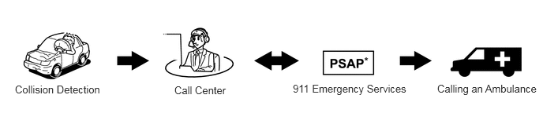
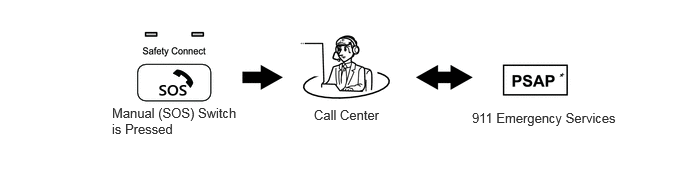
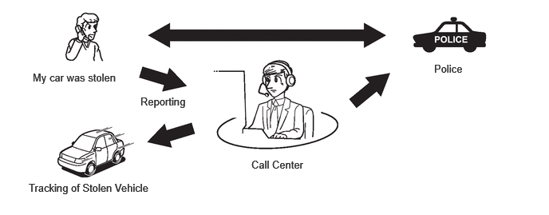
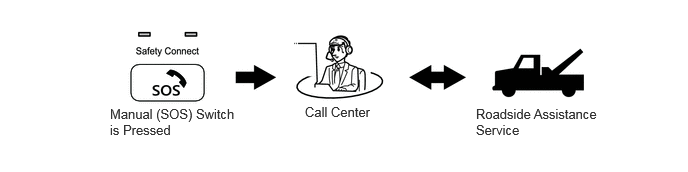
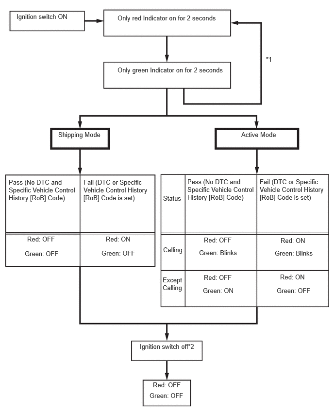

| Last Modified: 12-09-2025 | 6.11:8.1.0 | Doc ID: RM100000002GYBO |
| Model Year Start: 2024 | Model: Tacoma | Prod Date Range: [12/2023 - ] |
| Title: CELLULAR COMMUNICATION: SAFETY CONNECT SYSTEM: SYSTEM DESCRIPTION; 2024 - 2026 MY Tacoma Tacoma HV [12/2023 - ] | ||
SYSTEM DESCRIPTION
DESCRIPTION
(a) Safety Connect performs ACN (Automatic Collision Notification), manual emergency calling, stolen vehicle tracking and roadside assistance service, by audio and data communications between the vehicle and call center through a cellular phone network. As shown in the illustration, when a collision is detected, the vehicle sends its location calculated based on GPS signals and the identification code of the DCM (telematics transceiver) to a call center. After the necessary information has been gathered, the call center will relay this information to emergency services.

SYSTEM FUNCTION
(a) ACN (Automatic Collision Notification)
(1) When a collision is detected, the vehicle connects to the call center automatically and reports the vehicle location and vehicle information by data communication. The operator will connect to the vehicle and communicate with the occupant. Even if the occupant does not answer, the operator can notify emergency services.
*: Public Safety Answering Point
(b) Manual Emergency Call
(1) After pressing the manual (SOS) switch, the occupant can talk to an operator from the call center to seek assistance.
*: Public Safety Answering Point
(c) Stolen Vehicle Locator
(1) After the vehicle has been reported stolen to the police, the customer can contact the call center to begin the stolen vehicle locator process. The operator locates this vehicle by GPS and provides information to the police.
(d) Roadside Assistance Service
(1) Pressing the manual (SOS) switch will contract the call center, and a wide range of help, such as towing, flat tire, fuel delivery, etc. can be provided.
HINT:
The shape of the manual (SOS) switch shown in the illustration is an example, and may differ from that of an actual vehicle.
VOICE GUIDANCE FUNCTION
HINT:
The system plays back the following voice prompts in the situations shown.
|
Voice Prompt |
Usage Condition |
|---|---|
|
Communication module failure detected, please contact your dealer. |
When system detects LED failure (Red only), and another DTC is stored. Message is played every time ignition switch turned to ON while malfunction continues (while DTC is stored). |
|
Connecting to the call center. |
DCM activation start. |
|
Communication module activation failed. |
DCM activation fails for some reason. |
|
Communication module activation complete. |
DCM activation completed successfully. |
|
If you continue to receive this message, contact your dealer. |
Follows activation sequence. |
|
Unable to connect to the call center. |
- |
|
Impact detected. |
When DCM (telematics transceiver) receives collision detection signal. |
|
Connecting to the emergency call center. |
Call initiated to call center. |
|
Unable to connect to the emergency call center. |
DCM (telematics transceiver) cannot connect to emergency call center for some reason. |
|
To cancel, please press the button again. |
To end the call manually. |
|
Emergency call canceled. |
Confirmation that the call has been canceled. |
|
The system will try again. |
Could not connect to call center. |
|
To activate, please press the button again within 5 seconds. |
This voice prompt is instruction for activation. |
|
Safety connect is not active. |
Safety connect is not active for some reason. |
INDICATOR CONTROL FUNCTION DURING DCM (TELEMATICS TRANSCEIVER) SELF CHECK MODE
HINT:
Every time after the ignition switch is turned to ON, the DCM (telematics transceiver) will enter into a self check mode. The manual (SOS) switch red indicator will illuminate for 2 seconds and then turn off and then the manual (SOS) switch green indicator will illuminate and will stay on throughout normal operation. The following chart indicates the possible scenarios.
- *1: The red and green indicators alternate turning on and off at 2-second intervals until the DCM (telematics transceiver) completes auto activation. System will automatically switch to shipping mode or active mode if auto activation is successful.
- *2: If a call is in progress while the ignition switch off, the call will continue and the LED function will not change.
SWITCHING THE CONTRACT MODES
|
Contract Mode |
Description |
|---|---|
|
Shipping Mode |
The vehicle is being transported or service is canceled. Services do not operate. |
|
Active Mode |
Services can operate. However, the only services that operate are ones the customer are subscribed to. |
|
|
|